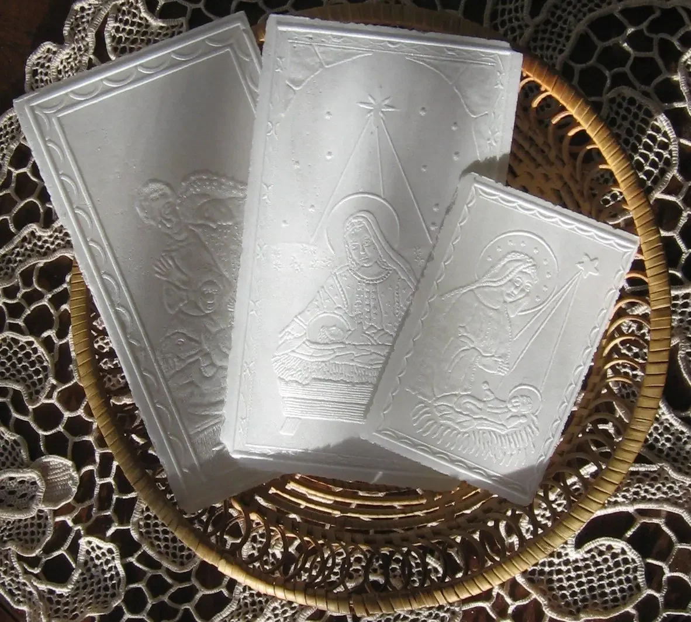
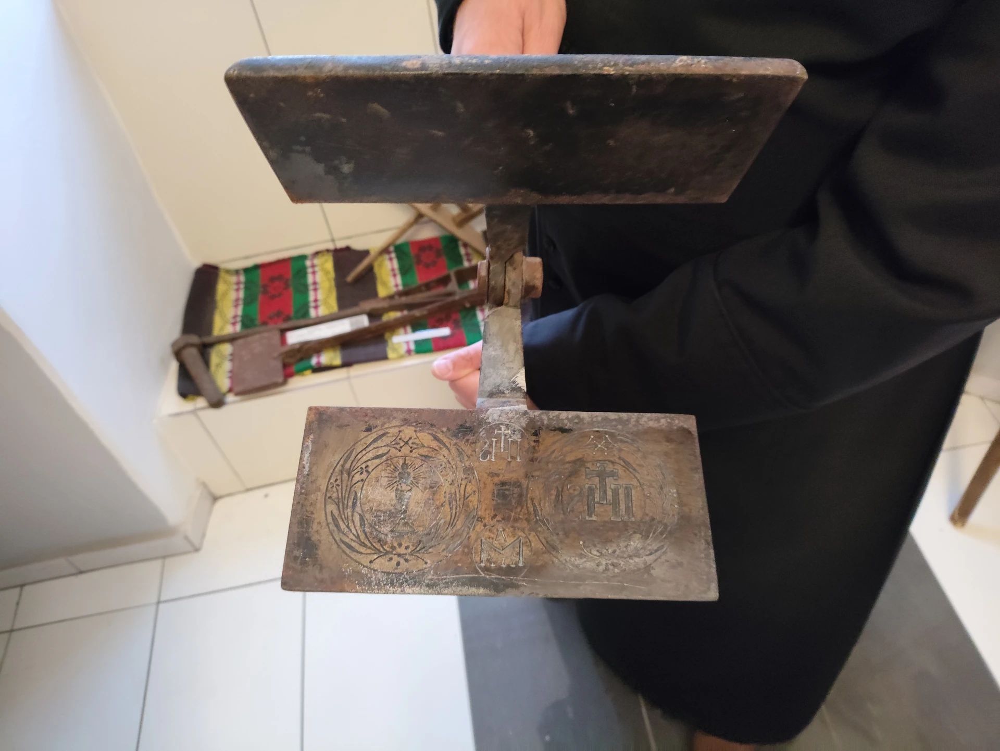
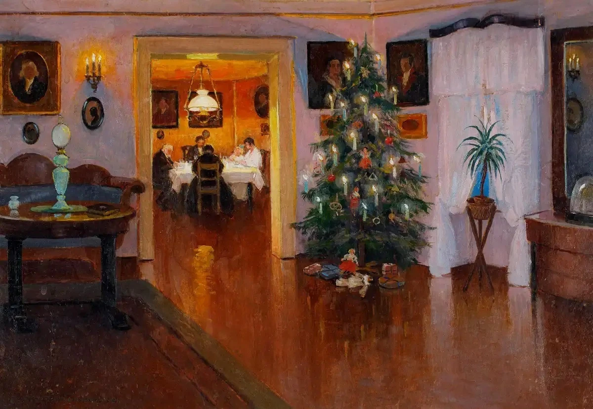
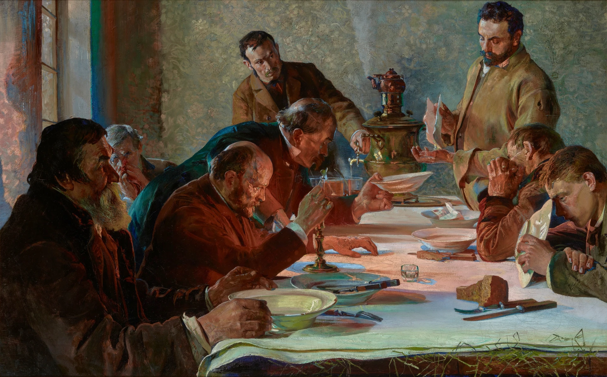

아직 펼치지 않은 카드세계의 성탄 전야 · 3폴란드의 오플라테크얇은 빵 한 장을 나누기 전에, 사람들은 무엇을 할까요?이 얇은 빵을 나눠 먹기 전에 뭘 할까?
해마다 12월 24일 저녁 · 첫 별이 뜨면폴란드 · 집집의 식탁에서 먼 곳까지
폴란드의 오플라테크
폴란드에서는 성탄 전야 저녁, 첫 별이 뜨면 식구들이 얇은 빵 ‘오플라테크’(opłatek)를 서로 나누며 복을 빌어요. 이 빵은 그림을 새긴 쇠틀로 구워, 성당에서 축복받고, 집과 먼 곳으로 건너갔어요. 반죽에서 식탁까지, 빵 한 장의 길을 한 단계씩 따라가 보세요.
폴란드에서는 성탄 전야에 얇은 빵을 서로 떼어 주며 “복 많이 받아” 해. 이 빵이 어떻게 식탁까지 오는지 한 단계씩 해 볼까?
검수 전 시안이에요(기준서 2판). 장면에는 기록에 있는 것만 옮겼고, 전해지는 이야기는 그렇다고 밝혔어요. 상상은 ‘눈 감고 상상해 보기’에만 썼어요. 단계 그림은 이 안내서가 그린 그림이에요.
시안 확인용카드 단계 미리 보기
1
그림을 새긴 쇠틀
이것은 벨라루스 이우예(Iŭje)의 한 본당 박물관에 있는 오플라테크 틀이에요. 경첩으로 이어진 두 쇠판 사이에 반죽을 넣고, 불에 달궈 얇게 구웠어요.
폴란드에서는 옛날에 성당의 오르간 연주자와 성당지기가 이런 쇠집게로 오플라테크를 구웠어요. 쇠판에 새긴 무늬가 얇은 빵에 그대로 찍혀 나왔어요.

아래 쇠판을 보세요. 왼쪽에는 잔과 빛나는 둥근 빵(성체)이, 오른쪽에는 십자가를 얹은 글자 무늬가 있어요. 글자는 좌우가 바뀐 채 새겨져 있어요. 도장처럼, 빵에 찍으면 바로 읽히게 하려는 거예요.
이 쇠판 사이에 반죽을 넣고 구우면, 그림이 찍힌 얇은 빵이 나와!
물어보기쇠판에 새긴 글자는 왜 거꾸로일까? 도장을 떠올려 봐!
2
반죽에서 식탁까지
얇은 빵 한 장이 식탁에 오르기까지의 차례를, 폴란드 시에르프츠(Sierpc)의 마조프셰 농촌 박물관이 이렇게 들려줘요.
아래 단추를 누를 때마다 한 단계씩 따라가 보세요. 그림은 이 안내서가 박물관 설명을 바탕으로 그렸고, 빵에 찍힌 무늬도 이 안내서가 지었어요.
단추를 누를 때마다 한 단계씩, 얇은 빵 한 장이 식탁까지 가요.
이 안내서가 그린 단계 그림 · 시에르프츠 마조프셰 농촌 박물관의 설명을 바탕으로(빵의 무늬는 이 안내서가 지음)
빵 한 장이 지나온 것
- 쇠틀이 찍은 그림
- 분홍 빵 · 집짐승 몫
- 종이 별 띠
- 성당의 축복
- 먼 곳으로 가는 편지
- 떼어 준 조각과 복
얇은 빵 한 장이 반죽에서 식탁까지 왔어요. 쇠틀이 찍은 그림은 이제 한 조각씩, 가까운 사람과 먼 사람에게 나뉘어요.
반죽하고, 굽고, 묶고, 나눠! 단추를 눌러 한 단계씩 해 봐.
물어보기분홍 빵은 누구 몫이었을까?
3
첫 별이 뜨면
폴란드의 성탄 전야 저녁은 하늘에 첫 별이 뜨면 시작돼요. 동방 박사들을 아기 예수께 이끈 별을 떠올리는 거예요(마태복음 2장 9절).
음식을 먹기 전, 기도하고 복음서를 읽은 뒤에 오플라테크를 나눠요. 집안의 어른이 한 사람 한 사람에게 한 조각씩 나눠 주며 복을 빌고, 식구들도 서로 그렇게 인사해요.
도미니코회의 시와크(Szylak) 수사는 이렇게 빵을 떼어 나누는 것이 사랑과 하나 됨, 그리고 용서의 표시라고 설명해요. 시에르프츠 박물관도 오플라테크를 형제애와 화해의 상징으로 소개해요.

위 그림은 화가 브로니스와바 리흐테르야노프스카(Bronisława Rychter-Janowska)의 「성탄 전야의 저녁상」이에요. 초를 켠 성탄 나무 너머, 열린 문 안쪽 방에서 식구들이 하얀 식탁보를 덮은 상에 둘러앉아 있어요.
하늘에 첫 별이 뜨면 저녁을 먹어. 먹기 전에 얇은 빵을 서로 떼어 주며 “복 많이 받아” 해.
물어보기그림에서 식구들이 둘러앉은 식탁을 찾아볼까?
4
편지에 담겨 온 빵
1892년, 화가 야체크 말체프스키(Jacek Malczewski)는 「시베리아의 성탄 전야」를 그렸어요. 고향에서 멀리 시베리아로 쫓겨 간 폴란드 사람들이 성탄 전야 상에 둘러앉아 있어요.
크라쿠프 국립 박물관의 코자코프스카자우하(Kozakowska-Zaucha) 학예사는 뒤에 선 사람을 짚어 줘요. 그는 접힌 편지에서 오플라테크 부스러기를 손바닥에 털어 내고 있어요. 편지에 담겨 온 빵이에요.
식탁보 밑으로는 건초 몇 가닥이 삐져나와 있어요. 폴란드 사람들은 예수가 마구간에서 태어난 것을 떠올리며 성탄 전야 식탁보 밑에 건초를 깔아요.

김이 나는 사모바르(물을 끓이는 러시아식 주전자) 곁에 빈 접시들과 두툼한 빵 한 조각이 놓여 있어요. 박물관 설명처럼, 한 식탁에 앉았지만 저마다 자기의 아픔에 잠겨 있어요.
쇠틀로 찍어 낸 얇은 빵은 이렇게 부스러기가 되어서도, 먼 곳의 식탁까지 건너갔어요.
집에서 아주 먼 곳에 있는 사람들이야. 뒤에 선 아저씨가 편지 속 빵 부스러기를 손에 털고 있어.
물어보기멀리 있는 사람에게 빵 한 조각을 보낸다면 누구에게 보낼래?
눈 감고 상상해 보기
창밖은 얼어붙은 밤. 접힌 편지를 펴자 하얀 부스러기가 손바닥 위로 사르르 떨어져요. 고향 집 창에도 지금쯤 첫 별이 떴을까요. 사모바르의 김이 천천히 피어올라요.
눈을 감아 봐. 추운 밤, 편지를 펴니 하얀 빵 부스러기가 손바닥에 톡톡. 멀리 있는 집에서도 별이 떴을까?
나의 자리
멀리 있는 사람에게 오플라테크 한 조각을 편지에 담아 보낸다면, 어떤 말을 함께 적고 싶나요?
멀리 사는 사람에게 이 빵 한 조각을 편지로 보낸다면, 뭐라고 써 줄래?
마음에 닿는 한 줄을 고르거나 직접 써 보세요. 한 줄을 남기면 이 자리의 도장이 찍혀요. 이 기기에만 저장돼요.
더 깊이
궁금한 칸만 펼쳐 읽어도 괜찮아요.
알고 보면
‘바친 것’이라는 이름 도미니코회의 시와크 수사는 오플라테크(opłatek)라는 이름이 라틴어 ‘오블라툼’(oblatum, 바친 것)에서 왔다고 설명해요.
수사들이 남긴 쇠틀 폴란드 오스트로웽카(Ostrołęka)의 쿠르피에 문화 박물관에는 무거운 무쇠로 만든 집게 모양 오플라테크 틀이 있어요. 그곳 수도원에 머물던 베르나르도회 수사들이 남긴 것으로, 안쪽에 ‘오스트로웽카 베르나르도회가 축하를 담아’(이 안내서가 옮김)라는 글이 새겨져 있어요.
빵에 얽힌 옛 믿음 시에르프츠 박물관의 설명에 따르면, 사람들은 오플라테크에 병을 낫게 하는 힘이 있다고 믿기도 했어요. 벌통에 넣으면 벌을 병에서 지키고, 한 조각을 우물에 던지면 물을 낫게 한다고 여겼대요.
기록마다 다른 점
그림 속 사람들은 누구일까 크라쿠프 국립 박물관의 설명은 시베리아 유형(멀리 쫓아 보내는 벌)에 얽힌 그림이라고 하고, 폴란드 통신(PAP)의 글은 봉기에 나섰다가 시베리아로 쫓겨 간 사람들을 그린 연작의 하나로 소개해요. 라디오 크라쿠프 기사는 말없이 앉은 여덟 남자라고만 해요.
쇠틀의 나이 이우예 쇠틀도, 오스트로웽카 쇠틀도 언제 만들어졌는지는 기록에 적혀 있지 않아요. 오스트로웽카 쇠틀을 남긴 베르나르도회 수사들이 18세기에 그곳에 있었다는 것만 기사에 나와요.
직접 가 보기
확인한 날 · 2026년 11월 18일 · 바뀌기 쉬운 정보라 정기적으로 다시 확인해요
말체프스키의 「시베리아의 성탄 전야」는 크라쿠프 국립 박물관이 가지고 있어요. 2017년 라디오 크라쿠프 기사에서는 크라쿠프 직물회관(수키엔니체)의 19세기 폴란드 미술 전시실에 걸려 있었어요. 지금 걸려 있는지는 박물관 누리집에서 확인하세요.
일곱 단계 끝까지 금박
반죽에서 나누기까지 일곱 단계를 끝까지 해 보면 카드에 금박이 입혀져요.
일곱 단계를 끝까지 해 보기
빵을 떼는 소리 채색
오플라테크를 떼는 소리를 들어 보거나, 아이와 함께 ‘영화처럼 보기’를 끝까지 보면 카드가 채색돼요. 둘 가운데 하나만 해도 돼요.
‘첫 별이 뜨면’ 장면에서 오플라테크를 떼는 소리 들어 보기
아이와 함께 ‘영화처럼 보기’를 끝까지 보기
근거 보기 (8)
- dzieje.pl(PAP, 2020.12.15): 시에르프츠 마조프셰 농촌 박물관 — 오르간 연주자와 성당지기가 부엌 화덕에 달군 쇠집게(żelaza)로 예수의 탄생과 고난에 얽힌 장면·상징을 찍음, 가장 좋은 밀가루·감자 가루·물 조금, 성탄 몇 주 전부터 본당 모두에게, 묶음에 종이 별로 꾸민 띠(그 띠가 나중에 나무 꼭대기를 꾸밈), 하얀 빵과 분홍 빵(비트 즙 · 집짐승 몫), 성당에서 축복, 집으로, 멀리 사는 가까운 이들에게 우편으로, 형제애와 화해, 옛 믿음(병 낫게 함 · 벌통 · 우물)
- 파베우 시와크 OP, 도미니코회 영어 누리집(2013.12.27): 첫 별(동방 박사를 예수께 이끈 별), 오블라툼(바친 것), 기도와 복음서 읽기 뒤 음식 전에 나눔, 집안의 어른이 한 조각씩 나눠 주고 서로 인사, 빵을 떼는 것은 사랑·하나 됨·용서의 표시, 식탁보 밑 건초(마구간)
- dzieje.pl(PAP, 2014): 오스트로웽카 쿠르피에 문화 박물관의 무거운 무쇠 집게 모양 오플라테크 틀 — 그곳 수도원의 베르나르도회 수사들이 남김(수사들은 18세기에 있었음 · 틀의 나이는 적혀 있지 않음), 새긴 글 ‘+Bernardyni ostrołęccy z powinszowaniem+’
- 라디오 크라쿠프(2017): 크라쿠프 국립 박물관 학예사 우르슐라 코자코프스카자우하의 「시베리아의 성탄 전야」 설명 — 뒤에 선 사람이 접힌 편지에서 오플라테크 부스러기를 털어 냄, 식탁보 밑 건초, 직물회관 19세기 폴란드 미술 전시실
- 구글 아츠앤컬처(크라쿠프 국립 박물관): 「시베리아의 성탄 전야」 1892 — 시베리아 유형, 김 나는 사모바르, 빈 접시들과 두툼한 갈색 빵, 저마다 자기 아픔을 생각함, 1916년 기증
- dzieje.pl(PAP, 2024): 말체프스키 「시베리아의 성탄 전야」(1892) — 유형자들의 성탄 전야 저녁, 시베리아로 쫓겨 간 봉기 참가자들을 그린 연작, 크라쿠프 국립 박물관 소장
- 위키미디어 공용: 이우예 본당 박물관의 오플라테크 틀(2025) 정보 — ‘Форма для вырабу аплатак’(오플라테크를 만드는 틀)
- 위키미디어 공용: 리흐테르야노프스카 「성탄 전야의 저녁상」 정보
그림·사진·소리 출처
‘처음 만나는 기독교 문화’의 깊은 카드예요. 카드 단계와 남긴 글은 이 기기에만 저장돼요.